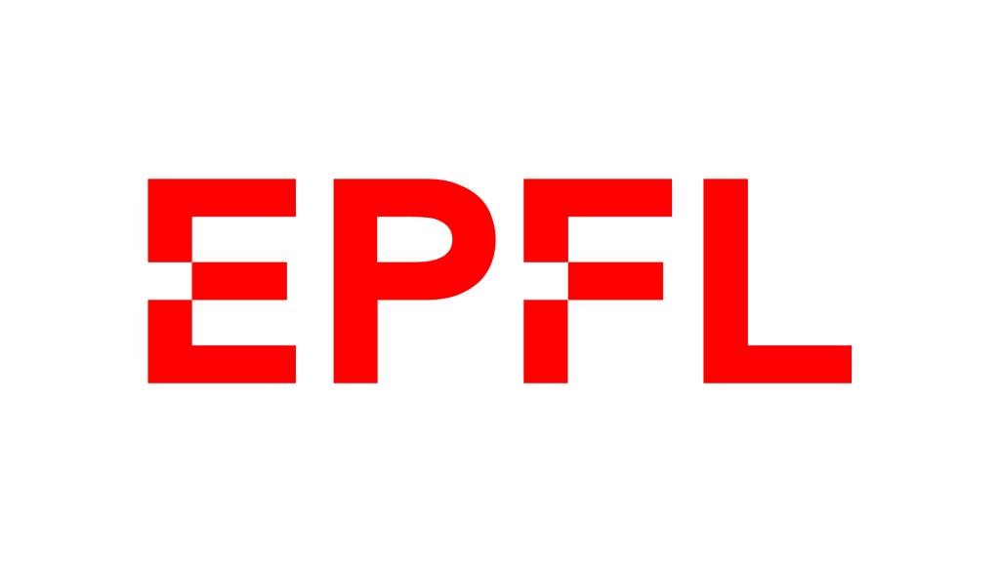
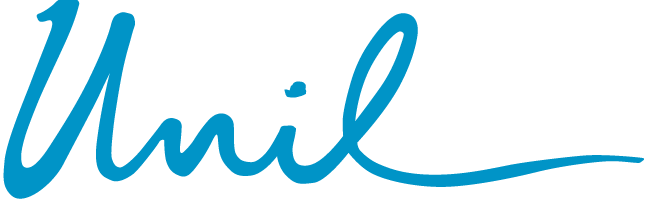
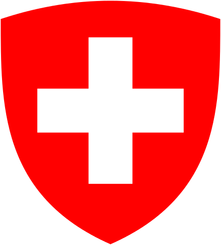
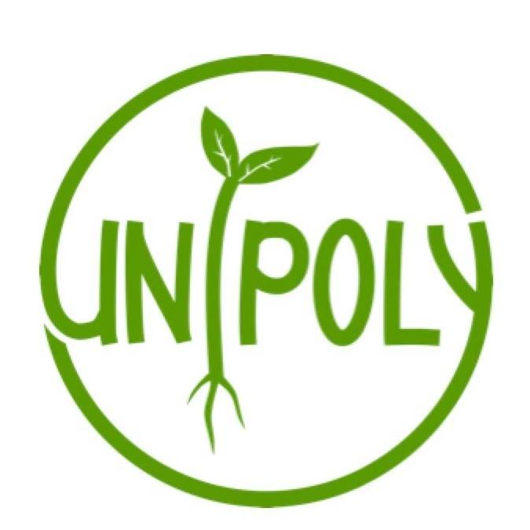

| Year | Experience | Location | |
|---|---|---|---|
|  | 03/21 current |
Doctoral student, Digital Humanities Laboratory (EPFL) Extracted entities from the 36'000 articles of the Historical Dictionary of Switzerland (HDS) and linked them to Wikipedia, resulting in a linked version of the HDS available here. Developed a web-based GIS platform to explore historical records from the 1808 Napoleonic cadaster of Venice as well as the 1741 Catastici (tax-records) Developed a web-based platform to explore and modify 3D models of historical cities in the cityJSON format. |
Lausanne, Switzerland |
| 10/20 02/21 |
Full-Stack Developer, Digital Humanities Laboratory (EPFL) Developed a demonstration website to explore 3D pointcloud scans of cities, beginning with Sion in Switzerland: scanvan.dhlab.epfl.ch. |
Lausanne, Switzerland | |
|  | 07/18 06/20 |
Research Engineer, Information Security and Privacy Lab (UNIL) Developped a web-app to explore questions of kin genomic privacy: santeperso.unil.ch. Participated in the creation of the kin genomic privacy algorithm behind the app. Conducted a user survey and did the data-analysis for the accompanying scientific paper. |
Lausanne, Switzerland |
|  | 04/17 03/18 |
Data-management intern, Swiss Federal Statistical Office (SFSO) Created historicized geographical metadata to handle municipalities and regional data through time, now available as a web-app. Centralized unstructured excel regional data in a SQL database for my group. |
Neuchâtel, Switzerland |
|  | 11/16 06/16 |
Treasurer and conference responsible, UniPoly, student association for sustainability In addition to my role as treasurer for the 2015 comittee, I organised a recruitment campaign and prepared 7 conferences/debates on sustainability topics as well as a visit of the Gösgen nuclear plant. |
Lausanne, Switzerland |